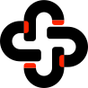

props - Branding Design
/ Implementation Prototype
Corporate Website Design
Design A-1
Red-orange
#FF2400
TOP
Design A-2
Dark black
#0D0D0D
TOP
Corporate Logomark & Logotype

Corporate Logomark
Corporate Logomark